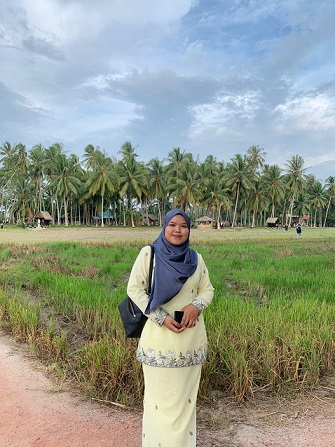
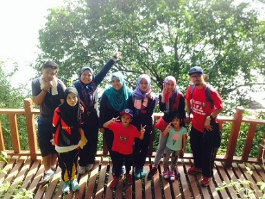
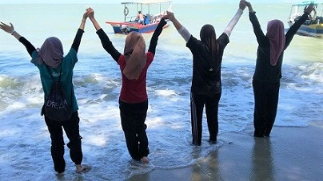

| HI, EVERYONE! | HOME | ABOUT ME | FAMILY | GALLERY |
| My name is Nur Fairuz Aida Binti Mohd Fadzil, I was born on 4 February 2020
and grew up in Permatang Pauh, Penang. I am the third child of five other siblings is a boy.
Being the only daughter in the family sometimes makes me jealous of other siblings because
their age gap is not huge, they were close to each other. However, I am happy to be by their
side because they always support my interests and everything I do.
My hobby is gardening and I got that interest from my parents because around our house is filled with plants, herbs, flowers and even fruits grown by themselves. I also like to do outdoor activities such as hiking and jungle tracking. Apart from that, I also like to spend time watching movies and listening to songs that do not matter locally or abroad as long as the storyline and lyrics are well presented. In high school, I went to school at SMKTHO and I was an active student in the co-curriculum. I represented the school for 5-year in netball at the district level and in 2015, our netball team got first place and qualified to go to state level. That experience was one of those experiences that I will never forget because our team’s effort points paid off. Currently, I am a final semester student for the Diploma in Information Management at UiTM Kedah. |
 |
| HOBBIES | FAVOURITE SONG: |
|
< My Plants  Jungle Tracking in Penang National Park  Hiking to Monkey Beach |